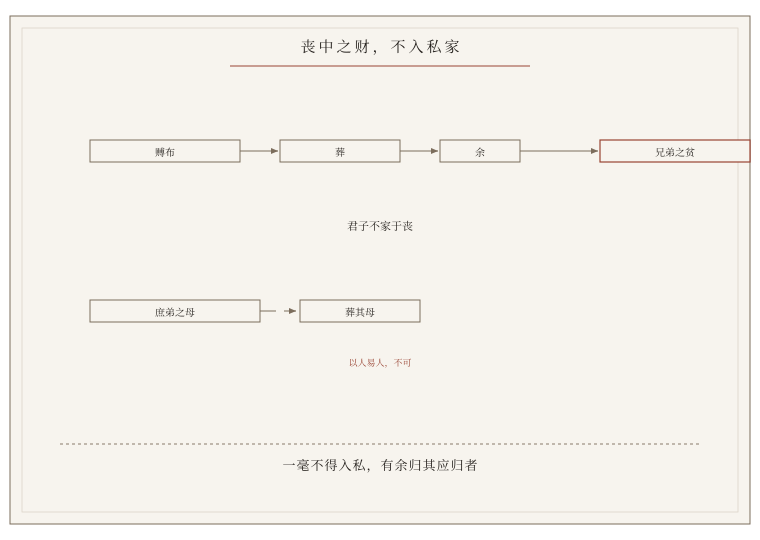

檀弓上 · 三·六十二 · 第 265 课
子柳之母死，子硕请具。无财，子硕曰「请粥庶弟之母」。子柳曰「如之何其粥人之母以葬其母也？不可。」既葬，子硕欲以赙布之余具祭器。子柳曰「不可，吾闻之也，君子不家于丧。请班诸兄弟之贫者。」
说什么事：两次提议，两次被拒。一次是要卖人的母亲来葬自己的母亲，一次是要拿吊客的钱添自家的祭器。
落在哪一层：礼，兼及礼数与礼意。论「丧中之财不入私」。
为何编在此位：上节论殷周礼异，是礼之「制」；此节以下数节转为礼之「守」：守财、守位、守节、守时。此为守之第一。
【经】子柳之母死，子碩請具。子柳曰：「何以哉？」子碩曰：「請粥庶弟之母。」子柳曰：「如之何其粥人之母以葬其母也？不可。」既葬，子碩欲以賻布之餘具祭器。子柳曰：「不可，吾聞之也，君子不家於喪。請班諸兄弟之貧者。」
【注】具，葬之器用。子柳，鲁叔仲皮之子，子硕兄。粥，谓嫁之也；妾贱，取之曰买。古者谓钱为泉布，所以通布货财。恶因死者以为利。以分死者所矜也；禄多则与邻里乡党。
【疏】此一节论不粥人之母及因死为利之事。案下《檀弓》云「叔仲皮学子柳」，故知子柳是叔仲皮之子；知「子硕兄」者，以此云「子硕曰：请粥庶弟之母」，故知子硕兄也。○解布名也：古者谓钱为泉布，言其通流有如水泉而遍，布货买天下货财也。郑注《周礼》云「藏曰泉，其行曰布，取名于水泉，其流行无不遍也」。又云：「泉始盖一品，周景王铸大泉而有二品，后数变易，不复识本制，至汉唯有五铢久行。」凡十黍为一参，一参为一铢，二十四铢为一两，故钱边作「五铢」字也。郑又云：「王莽改货而异作泉布，多至十品。今存于民间多者，有货布、大泉、货泉。货布长二寸五分，广寸，首长八分有奇，广八分，其圜好径二分半，足枝长八分，重二十五铢，直货泉二十五。大泉径一寸二分，重十二铢，直十五货泉。货泉径一寸，重五铢，直一也。」案《食货志》云今世谓之笮钱是也。古又有刀：一是契刀，一是错刀，契刀直五百，错刀直一千，刀形如钱而边作刀字形，故世犹呼钱为钱刀也。
请具 请求备办葬器。具，葬之器用。
何以哉 拿什么办呢。言无其财。
粥 同「鬻」，卖。注「谓嫁之也」。
庶弟之母 庶弟的母亲，即父之妾。
赙布 吊丧所赠的钱布。
祭器 祭祖之器。
不家于丧 不以丧为家，即不因丧而营私。注「恶因死者以为利」。
班 分发。班诸兄弟之贫者。
泉布 古之钱。藏曰泉，行曰布。
子柳的母亲死了，子硕请求备办葬器。子柳说：「拿什么办？」子硕说：「把庶弟的母亲嫁出去（换钱）。」子柳说：「怎么能卖了别人的母亲来葬自己的母亲？不行。」
葬完之后，子硕想拿吊客送的赙布余下的钱置办祭器。子柳说：「不行。我听说过：君子不借着丧事来营私。把这些钱分给兄弟中穷的人。」
两件事，一条线：丧中之物，不得入私。
第一次是「以人易人」——拿一个活着的母亲去换一个死去的母亲的葬仪。此不止于不仁，是乱了「谁的母亲」这一层：庶弟之母也是一个人的母亲，卖她，则庶弟失母，以葬己母。子柳一句「如之何其粥人之母以葬其母也」，把两层母亲摆在一起，问得人无话。
第二次是「以死人生财」——赙布是赠死者的，用其余置祭器，是把赠死者的钱转成自家的器。子柳不曰「不可用」，曰「君子不家于丧」：家者，营也。丧不是营私的时机。
两次拒，两次都给去处：不卖人，则不办；不用私，则「班诸兄弟之贫者」。拒而不绝，才有礼。
第一层 丧中之财有所主 赙布出于吊客，为死者而来。用在葬，是正用；葬毕有余，则归「兄弟之贫者」——注「以分死者所矜也，禄多则与邻里乡党」。此见古人之财观：丧中之财不为丧家所有，为死者所矜之人所有。
第二层 「不家于丧」 此四字是全节之骨。家，动词。丧中一切营求——办得体面、添置器物、留些余钱——都算「家于丧」。今人办丧，最易犯的正是此条：把丧事当一次家族的场面工程。
第三层 子硕之请不恶 子硕两次请，都是为「办得体面」：无财而欲具，既葬而欲备祭器。其心不贪，其见不明。子柳两次皆不斥其心，只守其线。此见兄弟相处之法：拒其事，不伤其人。
第四层 「吾闻之也」 子柳之拒，皆引所闻，非自造一说。「君子不家于丧」六字，是他所闻；不是他的发明。礼之守，靠的是这种「有处可引」。
与今日何干 办丧事最容易混进「面子账」：份子钱、回礼、排场、帮衬。此节给的尺很干脆：丧中之物，一毫不得入私；有余，归其应归者。今日的「应归者」，往往是逝者生前挂念的人。
| 左 | 右 |
|---|---|
| 无财而请具 | 欲得体面 |
| 请粥庶弟之母 | 以人易人 |
| 如之何其粥人之母以葬其母 | 不可 |
| 赙布之余具祭器 | 以死人生财 |
| 君子不家于丧 | 丧非营私之时 |
| 请班诸兄弟之贫者 | 余有所归 |
| 拒其事，不伤其人 | 兄弟相处之法 |
| 吾闻之也 | 有处可引 |
画一间办丧的堂屋，视点平。堂上停着一具薄棺，棺前只有一只陶豆、一只素碗，别无陈设。堂下左侧立着一位中年士人（子柳，深衣、手垂、面色平），右侧一位略少者（子硕，手里捧着一卷布，另一只手指向门外）。门外阶下站着两三个衣衫褴褛的远亲，手里空着。不写文字、不画人面细节。赭色只用在子硕手中那卷布的一角与门外远亲脚边的一只破履。
